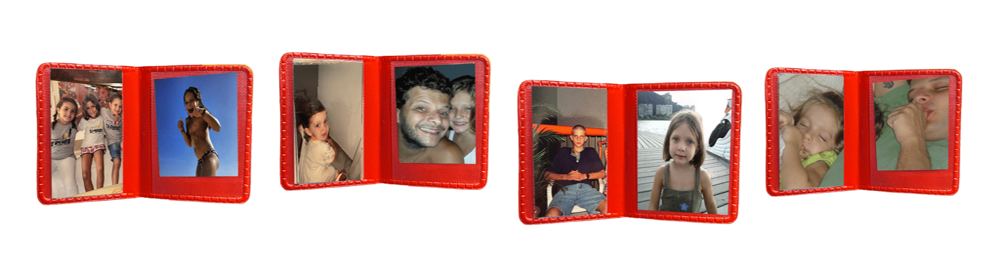
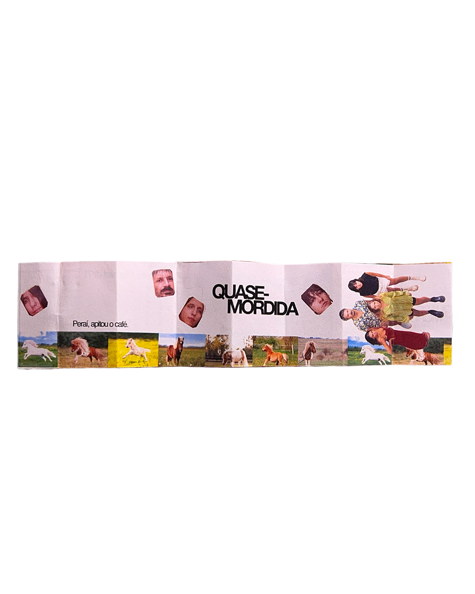
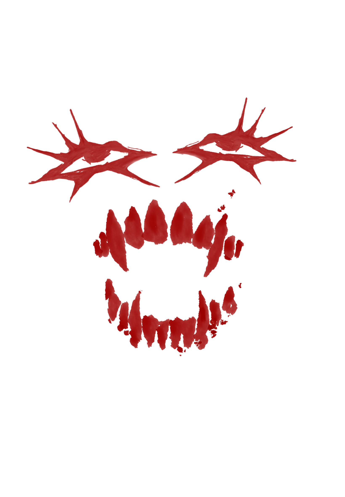

QUASE MORDIDA
Eu fui nessa peça chamada quase mordida, e me fez pensar sobre o quão louco é a relação familiar.
As pessoas que você mais ama no mundo são basicamente as mesmas que você quase tem vontade de morder todo dia. Dias por amor, outros por ódio.
E a vida ê assim, tem coisa que não explica, por mais que essa coisa é muito bem explicada pela psicologia, ainda com o minímo sentido que tenha.

Quando foi a última vez que você foi ao teatro? Te convido a refletir e principalmente consumir arte


@quasemordida